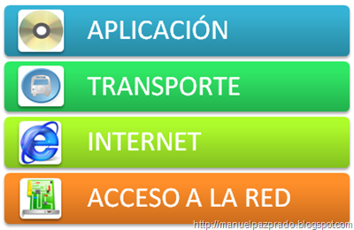

Modelo de referencia OSI
La mayoría de los conjuntos de protocolos de red se estructuran en capas. La Organización Internacional para la Estandarización (ISO) ha diseñado el modelo de referencia de Interconexión de Sistemas Abiertos (OSI) que utiliza capas estructuradas. El modelo OSI describe una estructura con siete capas para las actividades de red. Cada capa tiene asociados uno o más protocolos. Las capas representan las operaciones de transferencia de datos comunes a todos los tipos de transferencias de datos entre las redes de cooperación
Modelo de referencia de Interconexión de Sistemas Abiertos
- 7 - Aplicación: Se compone de los servicios y aplicaciones de comunicación estándar que puede utilizar todo el mundo.
- 6 - Presentación: Se asegura de que la información se transfiera al sistema receptor de un modo comprensible para el sistema
- 5 - Sesión: Administra las conexiones y terminaciones entre los sistemas que cooperan
- 4 - Trasporte: Administra la transferencia de datos. Asimismo, garantiza que los datos recibidos sean idénticos a los transmitidos
- 3 - Red: Administra las direcciones de datos y la transferencia entre redes
- 2 - Enlace de datos: Administra la transferencia de datos en el medio de red
- 1 - Física: Define las características del hardware de red
Operaciones
El modelo de referencia OSI define las operaciones conceptuales que no son exclusivas de un conjunto de protocolos de red particular. Por ejemplo, el conjunto de protocolos de red OSI implementa las siete capas del modelo OSI. TCP/IP utiliza algunas de las capas del modelo OSI. TCP/IP también combina otras capas. Otros protocolos de red, como SNA, agregan una octava capa.
Modelo de arquitectura del protocolo TCP/IP

El modelo OSI describe las comunicaciones de red ideales con una familia de protocolos. TCP/IP no se corresponde directamente con este modelo. TCP/IP combina varias capas OSI en una única capa, o no utiliza determinadas capas. La lista siguiente muestra las capas de la implementación de Oracle Solaris de TCP/IP. La lista enumera las capas desde la capa superior (aplicación) hasta la capa inferior (red física).
Modelo de arquitectura del protocolo TCP/IP
- 4 - Aplicación: NFS, NIS, DNS, LDAP, telnet, ftp, rlogin, rsh, rcp, RIP, RDISC, SNMP y otros.
- 3 - Trasporte: TCP, UDP, SCTP
- 2 - Internet: IPv4, IPv6, ARP, ICMP
- 1 - Física: Ethernet (IEEE 802.3), Token Ring, RS-232, FDDI y otros
Descripción de las Capas
- Capa de red física
La capa de red física especifica las características del hardware que se utilizará para la red. Por ejemplo, la capa de red física especifica las características físicas del medio de comunicaciones. La capa física de TCP/IP describe los estándares de hardware como IEEE 802.3, la especificación del medio de red Ethernet, y RS-232, la especificación para los conectores estándar.
- Capa de Internet
La capa de Internet, también conocida como capa de red o capa IP, acepta y transfiere paquetes para la red. Esta capa incluye el potente Protocolo de Internet (IP), el protocolo de resolución de direcciones (ARP) y el protocolo de mensajes de control de Internet (ICMP).
- Capa de transporte
La capa de transporte TCP/IP garantiza que los paquetes lleguen en secuencia y sin errores, al intercambiar la confirmación de la recepción de los datos y retransmitir los paquetes perdidos. Este tipo de comunicación se conoce como transmisión de punto a punto. Los protocolos de capa de transporte de este nivel son el Protocolo de control de transmisión (TCP), el Protocolo de datagramas de usuario (UDP) y el Protocolo de transmisión para el control de flujo (SCTP). Los protocolos TCP y SCTP proporcionan un servicio completo y fiable. UDP proporciona un servicio de datagrama poco fiable.
- Capa de transporte
La capa de aplicación define las aplicaciones de red y los servicios de Internet estándar que puede utilizar un usuario. Estos servicios utilizan la capa de transporte para enviar y recibir datos. Existen varios protocolos de capa de aplicación.